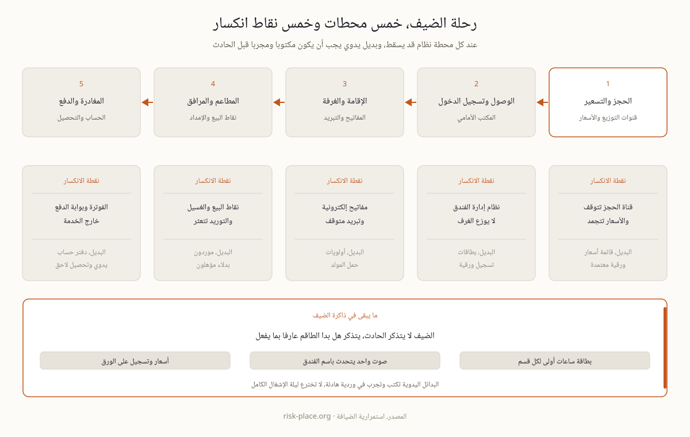

في أغلب القطاعات يوقف الاضطراب الخدمة ثم تستأنف لاحقا. وفي الضيافة يبقى جمهور الخدمة في الموقع بتوقعات كاملة بينما تفشل الأنظمة أو المرافق أو المحيط، فالضيف الذي وصل الليلة لا يعنيه سبب العطل ولا مقدم الخدمة الذي تأخر. لذلك تفتح جبهتان في اللحظة نفسها، جبهة تبقي الضيوف آمنين ومطلعين، وجبهة تبقي المحرك التجاري دائرا من حجوزات وفوترة ومشتريات، وغالبا بوضع يدوي وبطاقم يشتغل بنصف أدواته. والخطط التي تغطي الإخلاء وحده تفوت نصف المشكلة، فالإخلاء حدث نادر بينما تعطل الأنظمة وفشل التبريد حوادث شبه سنوية. والأساس الإداري خلف استمرارية الأعمال بوصفها انضباطا إداريا في صفحة التعريف.
أنفع تمرين في هذا القطاع ليس قراءة معيار، بل المشي في رحلة الضيف مرحلة بعد مرحلة وسؤال واحد عند كل محطة، ماذا يحدث إذا سقط النظام الذي تعتمد عليه هذه المحطة. الحجز والتسعير يعتمدان على قنوات التوزيع، والوصول وتسجيل الدخول على نظام إدارة الفندق، والإقامة على المفاتيح الإلكترونية والتبريد، والمطاعم والمرافق على نقاط البيع وسلسلة التوريد، والمغادرة على الفوترة وبوابة الدفع. وخمس محطات تعني خمس نقاط انكسار وخمسة بدائل يدوية يجب أن تكون مكتوبة ومجربة، لا أن تخترع ليلة الحادث. ومن هذا التمرين يخرج هدف زمن التعافي لكل نظام، مبنيا على أثر الانقطاع على الضيف لا على تفضيل قسم تقنية المعلومات، وصياغته في صفحة أهداف التعافي.

خمسة سيناريوهات تغطي أغلب ما يعطل فندقا في المنطقة، ولكل واحد خصوصية فندقية واختبار جاهزية يجاب عنه بالتجربة لا بالوثيقة.
| السيناريو | الخصوصية الفندقية | اختبار الجاهزية |
|---|---|---|
| تعطل نظام إدارة الفندق والحجوزات | تسجيل الوصول والفوترة وتوزيع الغرف يتجمد عند المكتب الأمامي | بطاقات تسجيل ورقية وقائمة أسعار جرى التدرب عليها، وسؤال واحد، هل يعمل المكتب أربعا وعشرين ساعة دون نظام |
| فشل الكهرباء أو التبريد | في صيف الخليج التبريد سلامة أرواح لا رفاهية | أولويات حمل المولد مقررة سلفا، ما الذي يبقى يعمل وبأي ترتيب |
| برمجية فدية | بيانات الضيوف والعمليات معا، حادث خصوصية وانقطاع في آن واحد | شبكات مقسمة، وقائمة ضيوف دون اتصال، وخطة إخطار تلبي قانون حماية البيانات |
| حادث في المنطقة أو تقييد الوصول | الضيوف لا يستطيعون المغادرة أو القادمون لا يصلون | تموين إقامة ممتدة ومنطق إعادة حجز متفق عليه مع فنادق شقيقة |
| حدث سمعة | المراجعات ووسائل التواصل تضخم كل ساعة ارتباك | صوت واحد يتحدث، وبيانات جاهزة، وطاقم يعرف ما لا يقال |
خطة الفندق التي تعمل ليلة الحادث تتكون من خمسة نواتج ملموسة تجمعها خطة استمرارية الأعمال في وثيقة واحدة قابلة للاستخدام.
وحقيقة القطاع تتكرر في استبيانات ما بعد الإقامة، الضيف نادرا ما يتذكر الحادث نفسه، بل يتذكر هل بدا الطاقم عارفا بما يفعل، والتدريب وحده هو ما ينتج هذا الانطباع.
الاضطراب نفسه لا يكلف الشيء نفسه في كل شهر. ساعة تعطل في موسم منخفض تصحح بهدوء واعتذار، والساعة نفسها ليلة إشغال كامل تعني ضيوفا واقفين في الردهة بلا غرف وطوابير عند المكتب وحجوزات ملغاة تظهر في المراجعات خلال ساعات. ولهذا تحدد أرقام التحمل عند الذروة لا عند متوسط السنة، فالخطة التي تصمد في الصيف وتنهار في موسم المعارض خطة موسم واحد. والفعاليات الكبرى تضيف طبقة ثانية، فالفندق الذي يستضيف مؤتمرا حكوميا أو وفدا رسميا يجد نفسه داخل ترتيبات أمنية وتنسيق مع جهات لم يتعامل معها من قبل، وتصبح خطته موضوع سؤال من المنظم ومن المالك معا. وثلاثة إجراءات تكفي عمليا، مراجعة أرقام التحمل قبل الموسم لا بعده، وتمرين نظري قبل الذروة بأسابيع لا أثناءها، وتثبيت قدرة الموردين الحرجين كتابة قبل توقيع عقود الفعالية، وطريقة إدارة التمرين نفسه في دليل التمارين النظرية (بالإنجليزية).
اختراق بيانات الضيوف حدث تشغيلي وقانوني في آن واحد بموجب قانون حماية البيانات الإماراتي، وساعتاه تعدان بالتوازي. الساعة التشغيلية تسأل كيف يواصل الفندق استقبال ضيوفه بقائمة دون اتصال بينما الأنظمة مغلقة، والساعة القانونية تبدأ من لحظة الاكتشاف لا من اجتماعكم الأول، ومهلة الاثنتين والسبعين ساعة تمر بسرعة على فريق يقرر وقتها من يبلغ. لذلك يعد مسار قرار الإخطار مع المستشار القانوني قبل الحادث بوقت طويل. وإلى جانبه تعمل جبهة السمعة بمنطق مشابه، صوت واحد يتحدث، وبيانات أولية جاهزة تقول ما يعرف فعلا ولا تعد بما لا يضمن، وطاقم مطلع على ما لا يقال أمام عدسة هاتف. وترتيب أول ستين دقيقة في صفحة الساعة الأولى للأزمة، وقيادة الحدث في تعريف إدارة الأزمات.
يلزم المعيار الوطني NCEMA 7000 الجهات الحكومية والبنية التحتية الحيوية مباشرة، والفنادق تشعر به بشكل غير مباشر عبر أربع قنوات، متطلبات الملاك، والفعاليات الحكومية المستضافة داخل المنشأة، واستبيانات شركات التأمين، ومعايير العلامات الفندقية التي باتت توائم متطلبات استمراريتها مع المعايير المحلية بشكل متزايد. وخريطة من يخضع لأي متطلب في الدولة في صفحة استمرارية الأعمال في الإمارات. أما الحد الأدنى الفعال لفندق مستقل فأربعة عناصر، مكتب أمامي بوضع يدوي، وشلال تواصل الضيوف، وأولويات حمل المولد، وتمرين نظري سنوي واحد يجمع تعطل الأنظمة مع حادث في المنطقة. أسابيع من الجهد يغطى بعدها أغلب الخطر الواقعي في القطاع. وفي الميدان تتكرر أربعة أخطاء بعينها.
الطبقة التي تربط تجربة الضيف بقرارات المالك ومجلس الإدارة هي حوكمة المرونة، وهي مادة برنامج ERGP، أول شهادة في حوكمة المرونة متاحة بالكامل باللغة العربية وبالإنجليزية أيضا. ست وحدات وستة مخرجات عملية ومشروع ختامي وشهادة قابلة للتحقق.
تعرف على برنامج ERGP